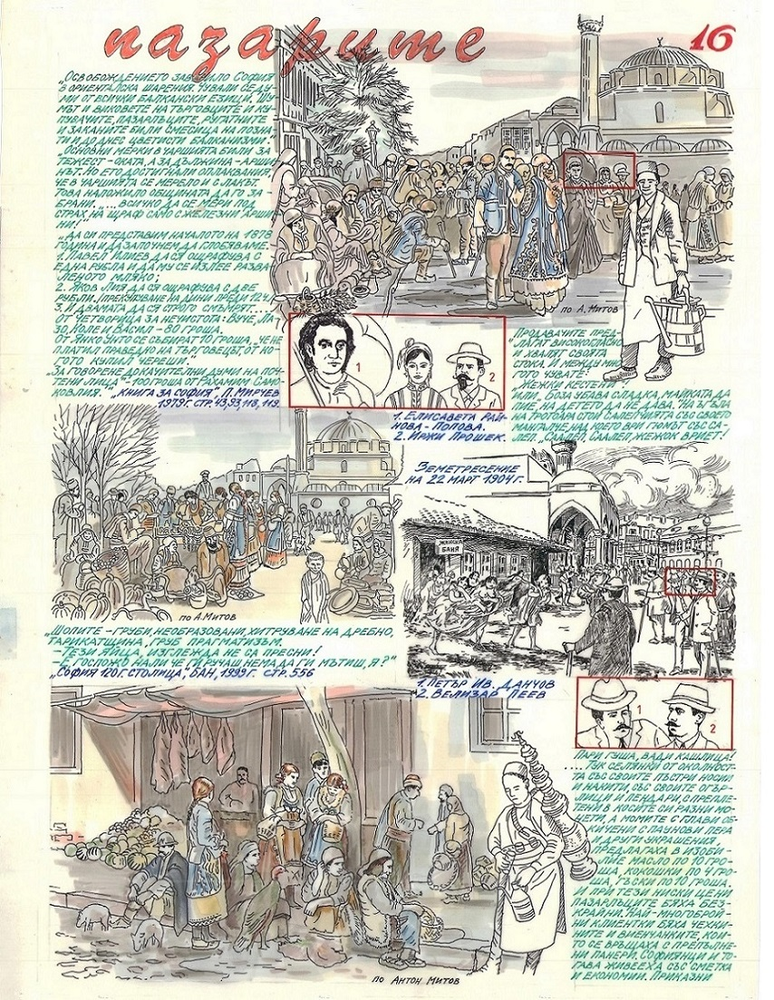
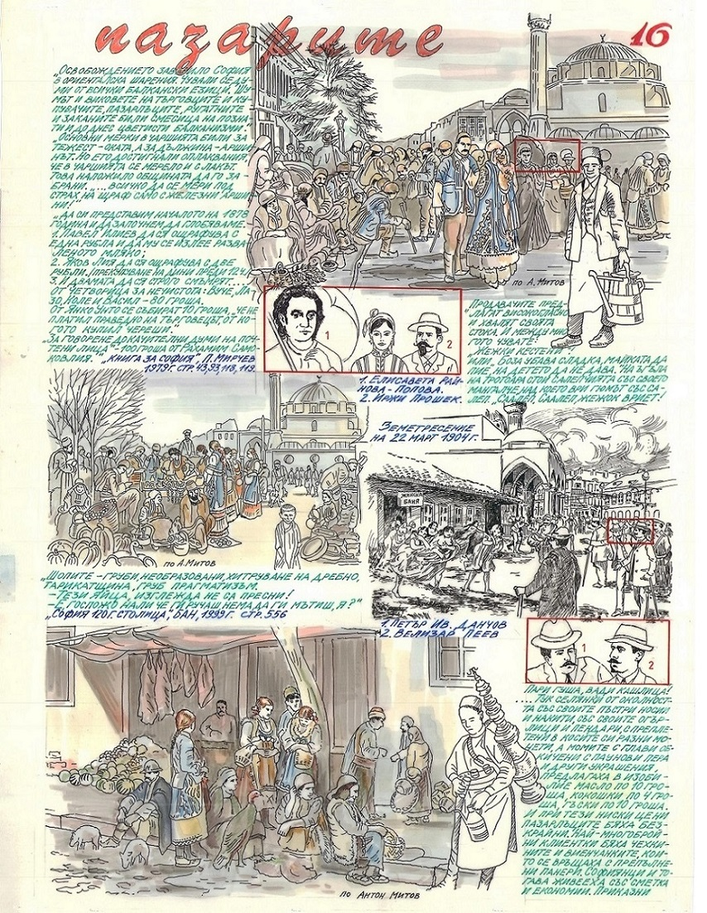
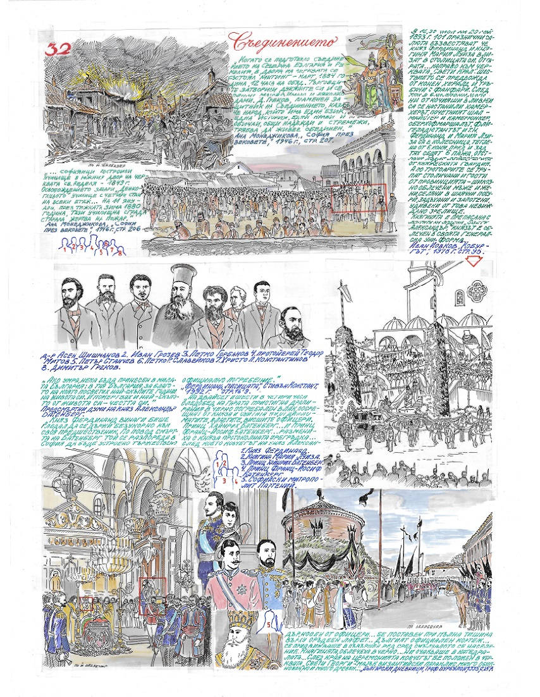
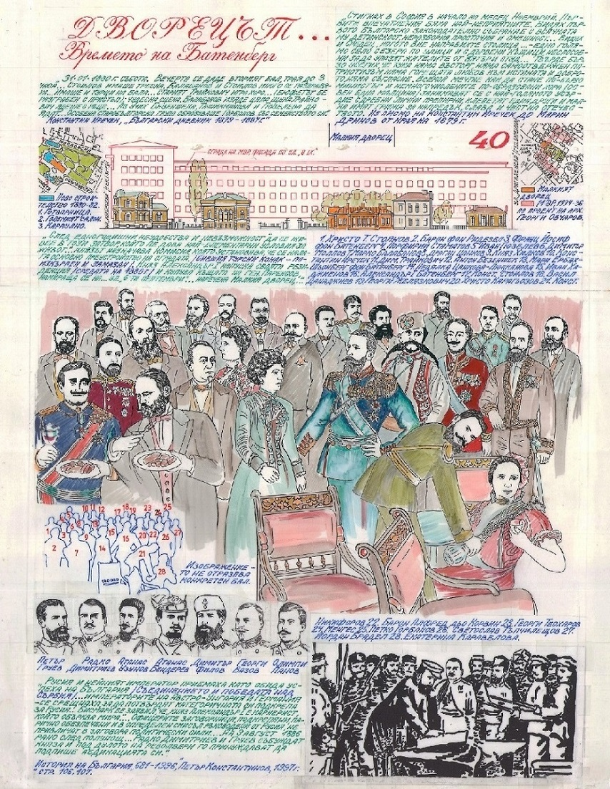
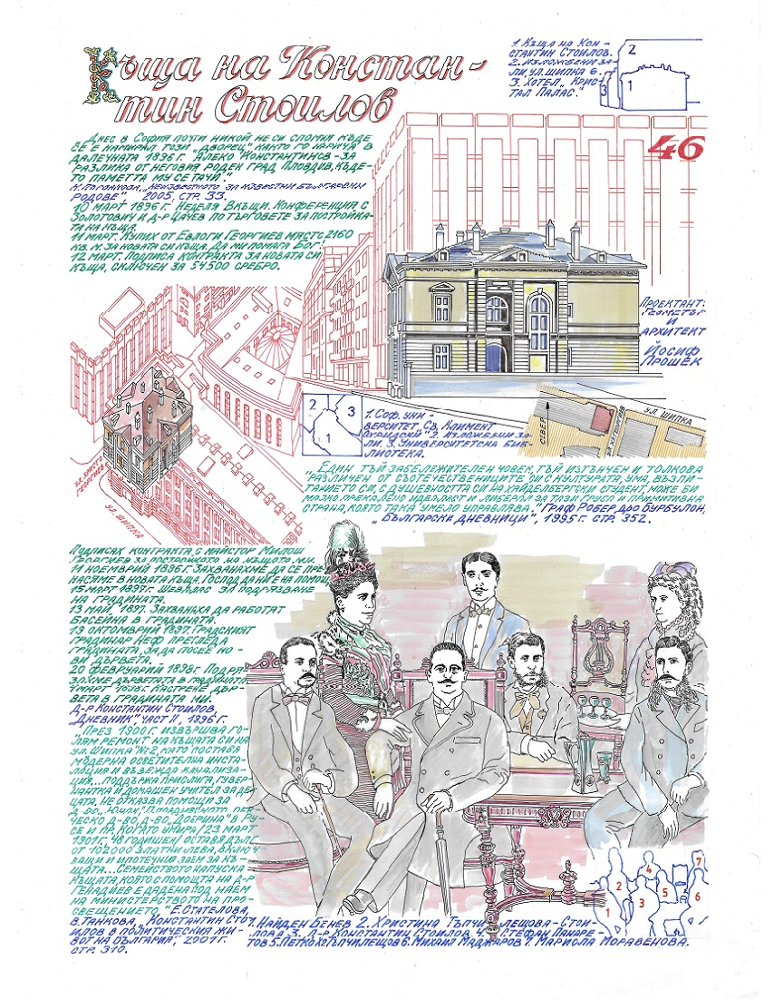
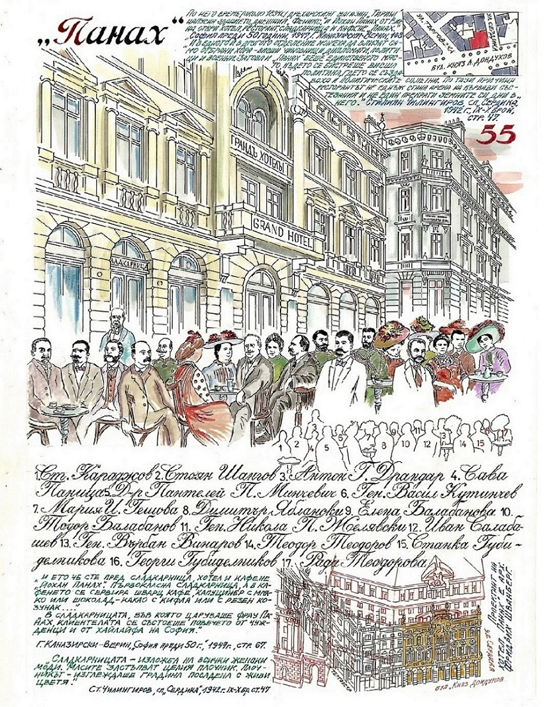
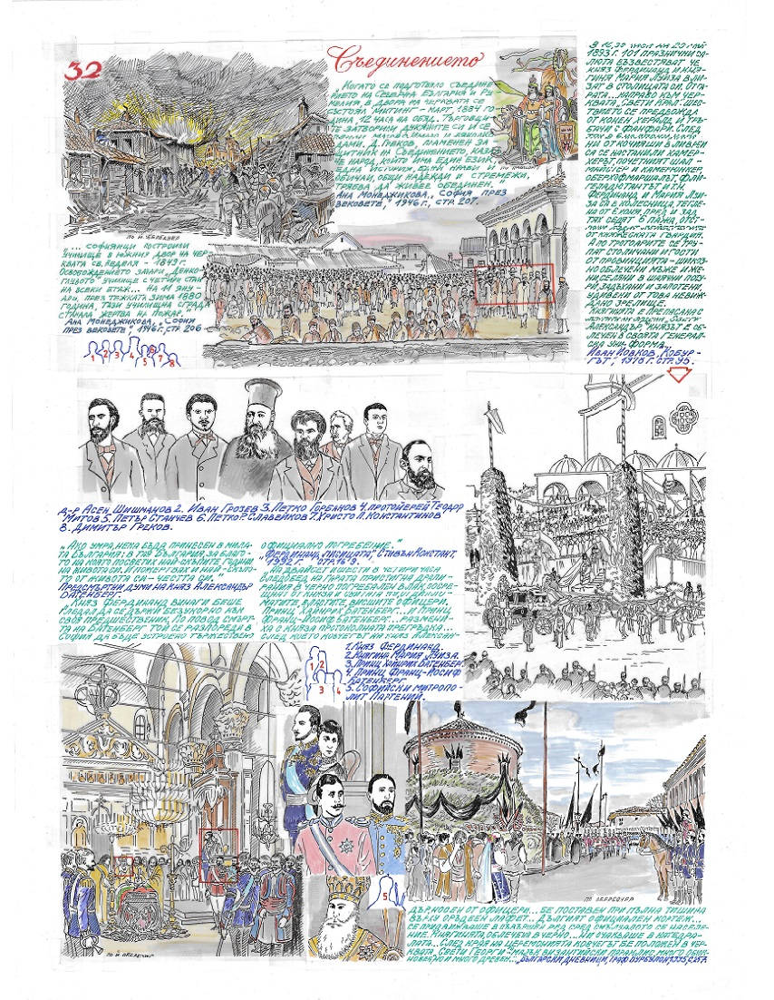
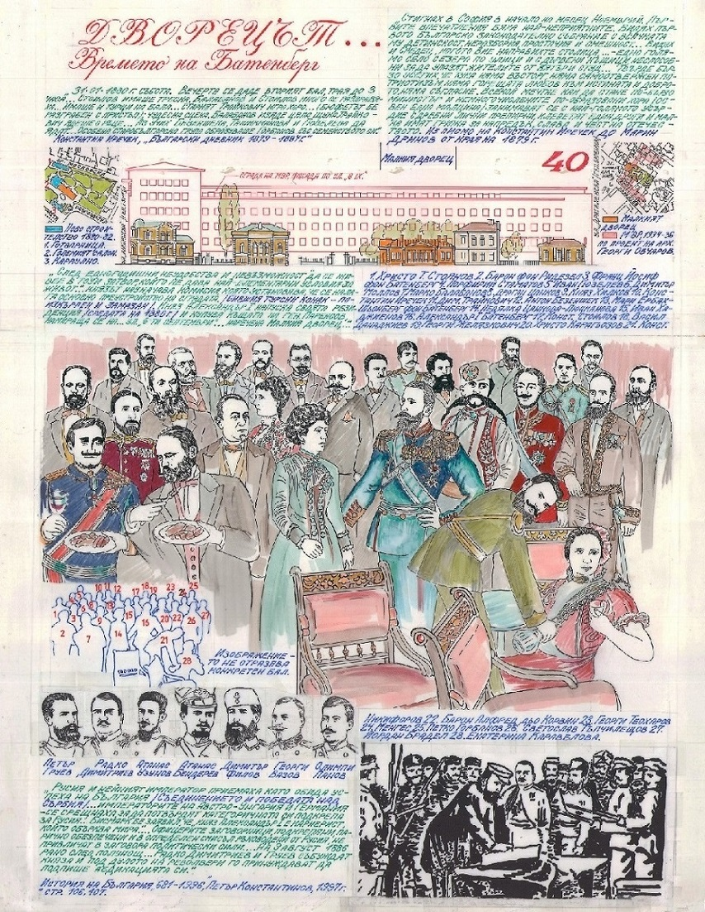
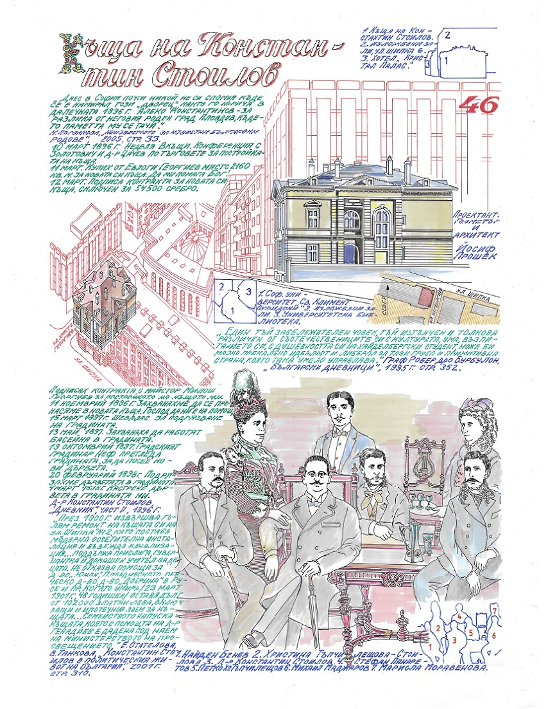
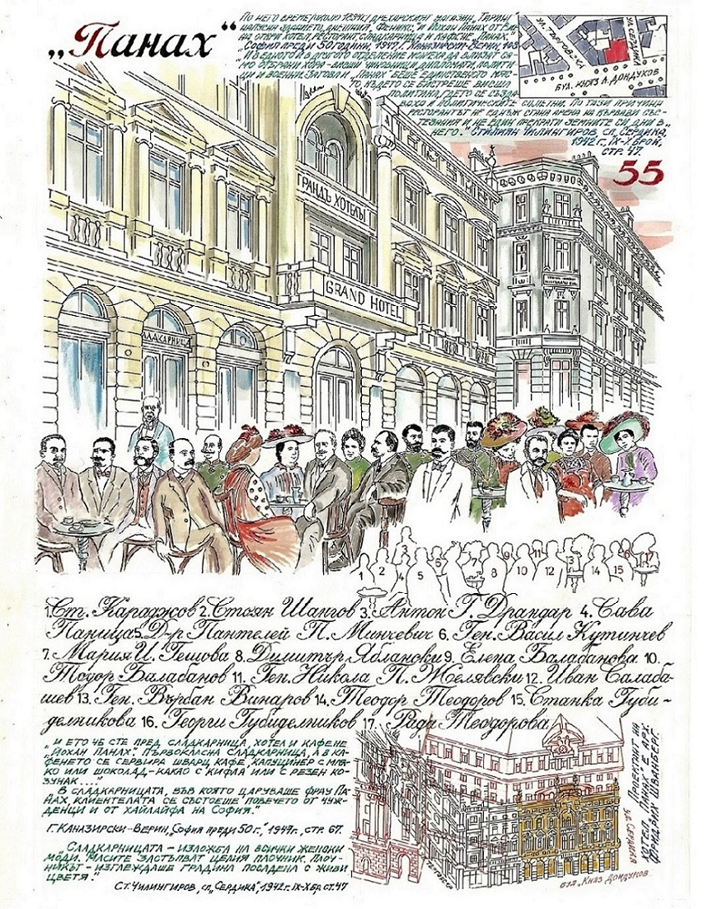

Улица със Сливнишкия пазар (хан). Накъде: Хотел "Етрополе", ул. Търговска.
Дворцовия манеж е използван и като народно събрание, за концерти на военния оркестър на гвардейския полк и за изложбена зала.
"След едногодишни неудобства и невъзможност да се живее в този затвор, който не дава най-елементарни условия за живот..." князът назначава комисия, която установява, че се налага преустройство на сградата.
И ето че сте пред сладкарница, хотел и кафене "Йохан Панах". Първокласна сладкарница, а в кафенето се сервира шварц кафе, капуцинер с мляко или шоколад-какао с кифла или с резен козунак...
Римската цивилизация е извор и стълб на българската същина... Римското мислене и дело ни изтръгна от Архаичността и въведе нас българите в епохата на модерността...
Тук селянки от околността със своите пъстри носии и накити, със своите огърлици и пендари, с преплетени в косите си разни монети, а момите с глави обкичени с паунови пера и други украшения, предлагаха в изобилие масло по 10 гроша, кокошки по 4 гроша, гъски по 10 гроша.
Д. Греков, пламенен защитник на Съединението, казал, че народ, който има един език, една история, едни нрави и обичаи, общи надежди и стремежи, трябва да живее обединен.
Днес в София почти никой не си спомня къде се е намирал този "дворец", както го нарича в далечната 1896 г. Алеко Костантинов - за разлика от неговия роден град Пловдив, където паметта му се тачи.

 

 






